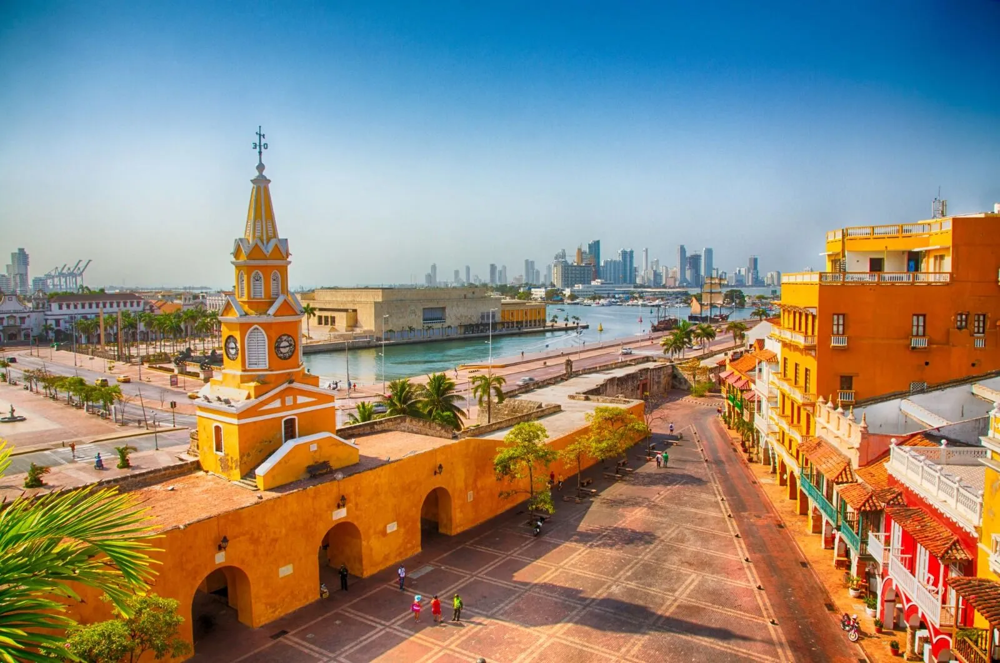
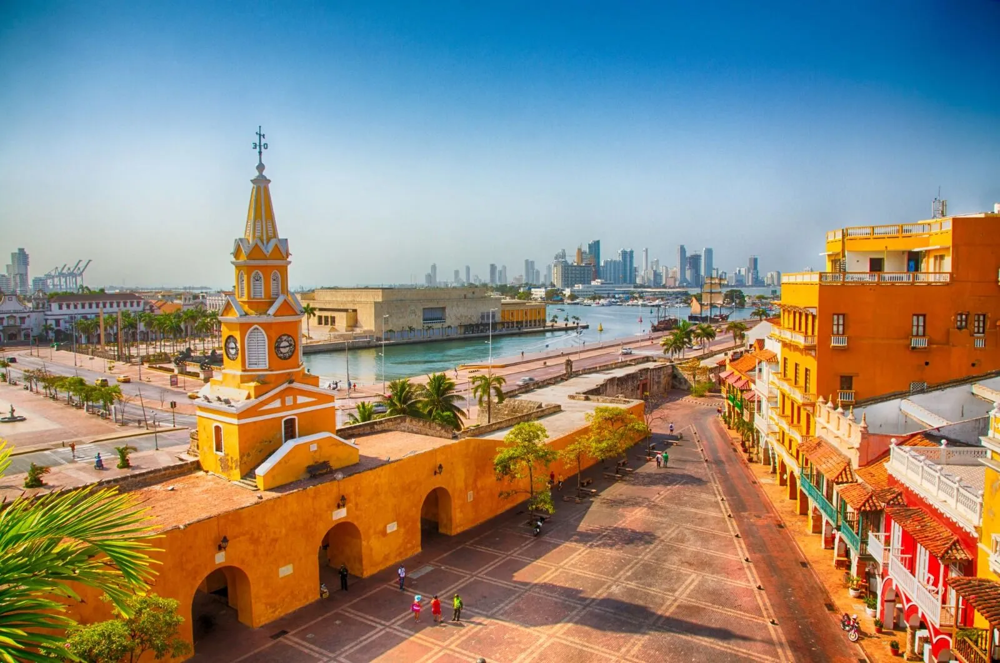
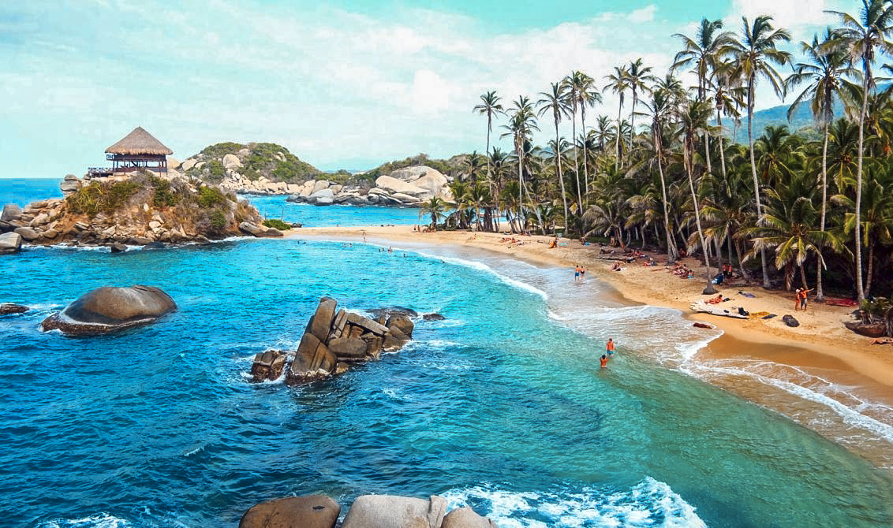
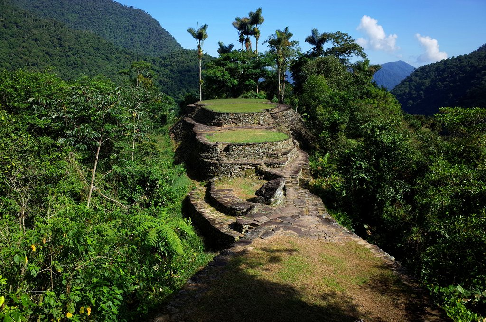
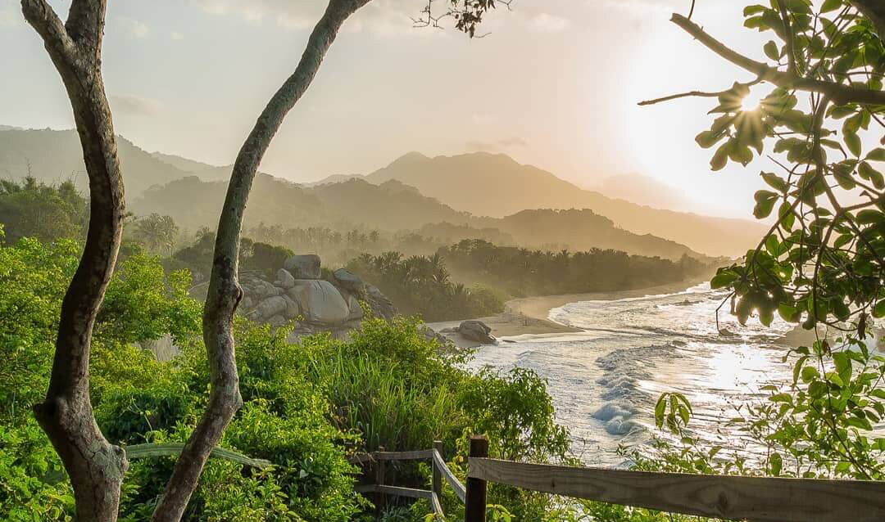
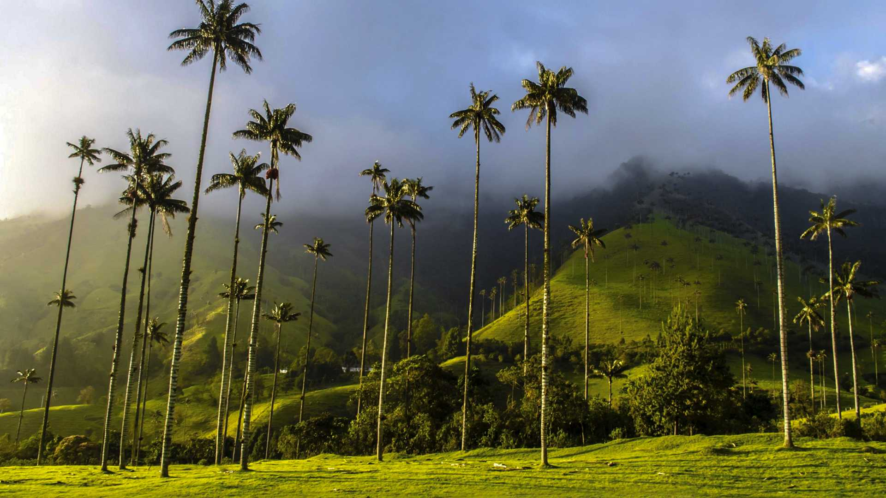
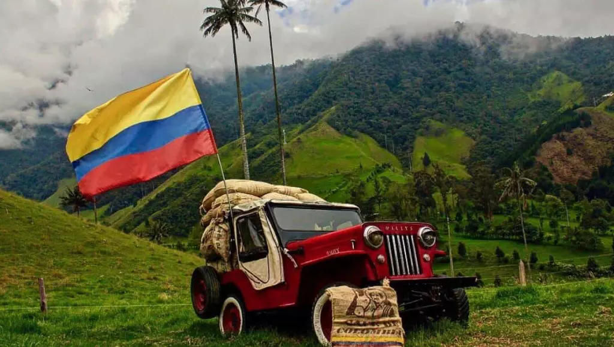
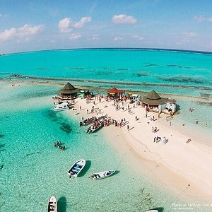
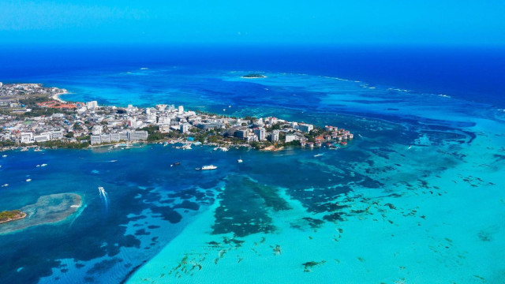
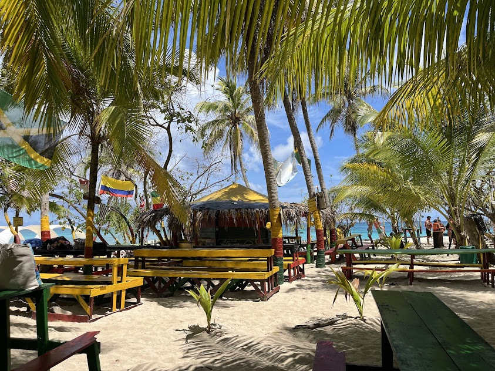

Descubre estos destinos increíbles
- Cartagena de Indias
- Parque Tayrona
- Medellín
- Eje Cafetero
- Caño Cristales
Cartagena de Indias

 

Cartagena es una ciudad histórica y costera ubicada en la región Caribe de Colombia. Es famosa por su ciudad amurallada, playas, arquitectura colonial y vibrante vida cultural. Declarada Patrimonio de la Humanidad por la UNESCO.
Parque Nacional Tayrona



Ubicado cerca de Santa Marta, el Parque Tayrona es un paraíso natural con playas cristalinas, selva tropical y una gran diversidad de fauna y flora. Es ideal para ecoturismo y caminatas.
Medellín


Conocida como la ciudad de la eterna primavera, Medellín se destaca por su clima agradable, innovación, metrocable, cultura paisa y eventos como la Feria de las Flores.
Eje Cafetero



Región montañosa famosa por sus fincas de café, pueblos coloridos como Salento y Filandia, y el Valle de Cocora con sus altas palmas de cera. Ideal para los amantes del paisaje y la tradición rural colombiana.
Caño Cristales


Conocido como el “río de los cinco colores”, Caño Cristales está ubicado en la Serranía de la Macarena y es uno de los ríos más hermosos del mundo gracias a sus plantas acuáticas que lo tiñen de colores vibrantes.
Minca


Pequeño pueblo en las montañas cerca de Santa Marta. Minca es perfecto para el ecoturismo, cascadas, senderismo y vistas panorámicas de la costa Caribe y la Sierra Nevada.
San Andrés



Isla ubicada en el mar Caribe, famosa por su mar de siete colores, playas blancas y cultura raizal. Ideal para buceo, snorkel y relajación en un paraíso tropical.